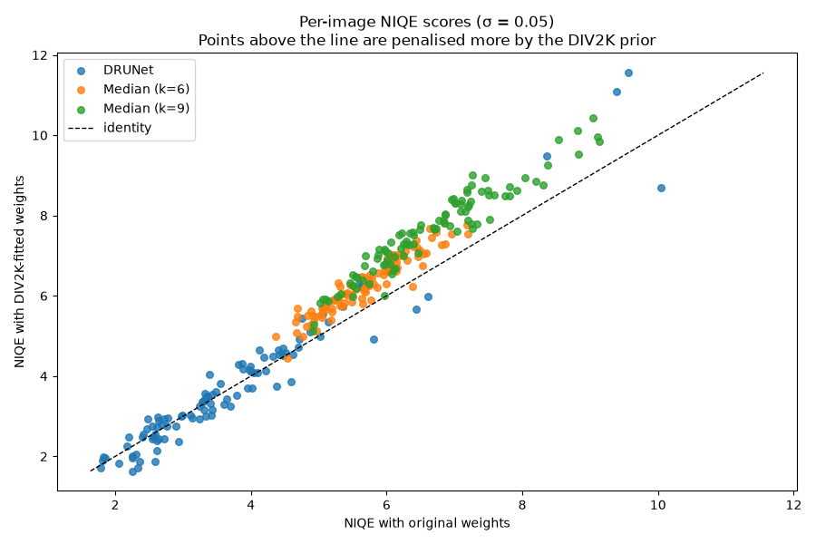
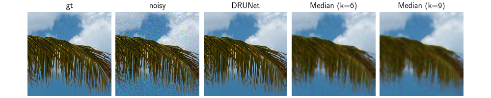

Note
New to DeepInverse? Get started with the basics with the 5 minute quickstart tutorial..
Fitting NIQE on a custom dataset#
This example shows how to fit deepinv.loss.metric.NIQE on a new dataset, and use it
to evaluate denoiser performance.
NIQE is a no-reference image quality metric that compares local image statistics against those of pristine (distortion-free) images. Fitting NIQE on a domain-specific dataset can better capture the expected image characteristics.
In this example, we fit NIQE on DIV2K. DIV2K is also natural imaging data, but the image quality and sharpness is higher than the dataset NIQE was originally fitted on, so the resulting weights characterise a sharper, higher-quality prior while remaining valid NIQE statistics.
To apply this procedure to your own data, any dataset returning RGB or single-channel
tensors will work. The denominator constructor argument divides input pixels before
computing statistics; it serves two purposes: keeping pixel magnitudes from dominating
the local-statistics computation, and matching the input scale to the scale the weights
were fitted on. Two consequences:
When using the bundled original NIQE weights (which were fitted on [0, 255] data with
denominator=1), inputs must reach NIQE on a comparable [0, 255] scale. So for [0, 1] data, passdenominator=1/255(x / (1/255) = 255 * x), or scale to [0, 255] before calling and leavedenominator=1.When fitting your own weights, the only requirement is that the same
denominatoris used at fit and evaluation time. The absolute scale is up to you.
In this example we want to compare the original and DIV2K-fitted weights on the same
inputs, so we keep both on the [0, 255] scale: the fitting transform multiplies by 255
(default denominator=1 at fit time), and at evaluation we scale the denoised [0, 1]
outputs to [0, 255] before passing them to either NIQE instance.
We perform 5-fold cross-validation on the DIV2K validation set (80 fit / 20 test per fold) and compare original NIQE weights against DIV2K-fitted weights at noise level σ=0.05. A key finding is that the DIV2K-fitted NIQE assigns systematically higher (worse) scores to over-smoothed outputs (e.g. large median filters), reflecting that it is more sensitive to the loss of fine texture detail captured in the DIV2K prior.
Setup#
Selected GPU 0 with 1451.25 MiB free memory
Define transforms and load DIV2K#
We create two instances of DIV2K with different transforms: one that scales pixel values to [0, 255] for fitting NIQE weights, and one that keeps values in [0, 1] for denoising.
crop_size = 1024
fit_transform = Compose(
[
ToTensor(),
CenterCrop(crop_size),
Lambda(lambda x: x * 255),
]
)
test_transform = Compose(
[
ToTensor(),
CenterCrop(crop_size),
]
)
div2k_fit = dinv.datasets.DIV2K(
root=dinv.utils.get_data_home(), mode="val", download=True, transform=fit_transform
)
div2k_fit.x_paths = natsorted(div2k_fit.x_paths)
div2k_test = dinv.datasets.DIV2K(
root=dinv.utils.get_data_home(),
mode="val",
download=False,
transform=test_transform,
)
div2k_test.x_paths = natsorted(div2k_test.x_paths)
n_images = len(div2k_fit)
all_indices = list(range(n_images))
/local/jtachell/deepinv/deepinv/examples/metrics/demo_custom_niqe.py:82: DeprecationWarning: Function 'get_data_home' is deprecated and will be removed in a future version.
root=dinv.utils.get_data_home(), mode="val", download=True, transform=fit_transform
0%| | 0/448993893 [00:00<?, ?it/s]
2%|▏ | 6.94M/428M [00:00<00:06, 72.6MB/s]
4%|▍ | 18.1M/428M [00:00<00:04, 98.7MB/s]
7%|▋ | 29.3M/428M [00:00<00:03, 107MB/s]
9%|▉ | 40.5M/428M [00:00<00:03, 111MB/s]
12%|█▏ | 51.7M/428M [00:00<00:03, 113MB/s]
15%|█▍ | 62.9M/428M [00:00<00:03, 114MB/s]
17%|█▋ | 74.1M/428M [00:00<00:03, 115MB/s]
20%|█▉ | 85.2M/428M [00:00<00:03, 116MB/s]
23%|██▎ | 96.4M/428M [00:00<00:02, 116MB/s]
25%|██▌ | 108M/428M [00:01<00:02, 116MB/s]
28%|██▊ | 119M/428M [00:01<00:02, 117MB/s]
30%|███ | 130M/428M [00:01<00:02, 117MB/s]
33%|███▎ | 141M/428M [00:01<00:02, 117MB/s]
36%|███▌ | 152M/428M [00:01<00:02, 117MB/s]
38%|███▊ | 164M/428M [00:01<00:02, 117MB/s]
41%|████ | 175M/428M [00:01<00:02, 117MB/s]
43%|████▎ | 186M/428M [00:01<00:02, 117MB/s]
46%|████▌ | 197M/428M [00:01<00:02, 117MB/s]
49%|████▊ | 208M/428M [00:01<00:01, 117MB/s]
51%|█████▏ | 220M/428M [00:02<00:01, 117MB/s]
54%|█████▍ | 231M/428M [00:02<00:01, 117MB/s]
56%|█████▋ | 242M/428M [00:02<00:01, 117MB/s]
59%|█████▉ | 253M/428M [00:02<00:01, 117MB/s]
62%|██████▏ | 264M/428M [00:02<00:01, 117MB/s]
64%|██████▍ | 275M/428M [00:02<00:01, 117MB/s]
67%|██████▋ | 287M/428M [00:02<00:01, 117MB/s]
70%|██████▉ | 298M/428M [00:02<00:01, 117MB/s]
72%|███████▏ | 309M/428M [00:02<00:01, 117MB/s]
75%|███████▍ | 320M/428M [00:02<00:00, 117MB/s]
77%|███████▋ | 331M/428M [00:03<00:00, 117MB/s]
80%|████████ | 343M/428M [00:03<00:00, 117MB/s]
83%|████████▎ | 354M/428M [00:03<00:00, 117MB/s]
85%|████████▌ | 365M/428M [00:03<00:00, 117MB/s]
88%|████████▊ | 376M/428M [00:03<00:00, 117MB/s]
90%|█████████ | 387M/428M [00:03<00:00, 117MB/s]
93%|█████████▎| 398M/428M [00:03<00:00, 117MB/s]
96%|█████████▌| 410M/428M [00:03<00:00, 117MB/s]
98%|█████████▊| 421M/428M [00:03<00:00, 117MB/s]
100%|██████████| 428M/428M [00:03<00:00, 116MB/s]
Extracting: 0%| | 0/101 [00:00<?, ?it/s]
Extracting: 3%|▎ | 3/101 [00:00<00:04, 23.24it/s]
Extracting: 6%|▌ | 6/101 [00:00<00:04, 23.26it/s]
Extracting: 9%|▉ | 9/101 [00:00<00:03, 25.10it/s]
Extracting: 12%|█▏ | 12/101 [00:00<00:03, 25.72it/s]
Extracting: 15%|█▍ | 15/101 [00:00<00:04, 20.70it/s]
Extracting: 18%|█▊ | 18/101 [00:00<00:03, 21.86it/s]
Extracting: 21%|██ | 21/101 [00:00<00:04, 19.54it/s]
Extracting: 24%|██▍ | 24/101 [00:01<00:03, 19.28it/s]
Extracting: 27%|██▋ | 27/101 [00:01<00:03, 20.64it/s]
Extracting: 30%|██▉ | 30/101 [00:01<00:03, 17.80it/s]
Extracting: 32%|███▏ | 32/101 [00:01<00:04, 16.28it/s]
Extracting: 34%|███▎ | 34/101 [00:01<00:04, 14.43it/s]
Extracting: 36%|███▌ | 36/101 [00:01<00:04, 14.59it/s]
Extracting: 39%|███▊ | 39/101 [00:02<00:03, 17.79it/s]
Extracting: 41%|████ | 41/101 [00:02<00:03, 18.23it/s]
Extracting: 43%|████▎ | 43/101 [00:02<00:03, 18.54it/s]
Extracting: 45%|████▍ | 45/101 [00:02<00:03, 16.44it/s]
Extracting: 48%|████▊ | 48/101 [00:02<00:02, 18.04it/s]
Extracting: 50%|████▉ | 50/101 [00:02<00:02, 18.09it/s]
Extracting: 53%|█████▎ | 54/101 [00:02<00:02, 22.32it/s]
Extracting: 56%|█████▋ | 57/101 [00:02<00:02, 19.91it/s]
Extracting: 59%|█████▉ | 60/101 [00:03<00:02, 18.72it/s]
Extracting: 62%|██████▏ | 63/101 [00:03<00:02, 17.98it/s]
Extracting: 65%|██████▌ | 66/101 [00:03<00:01, 18.95it/s]
Extracting: 67%|██████▋ | 68/101 [00:03<00:01, 17.09it/s]
Extracting: 69%|██████▉ | 70/101 [00:03<00:01, 17.21it/s]
Extracting: 72%|███████▏ | 73/101 [00:03<00:01, 19.43it/s]
Extracting: 75%|███████▌ | 76/101 [00:04<00:01, 20.58it/s]
Extracting: 78%|███████▊ | 79/101 [00:04<00:01, 19.60it/s]
Extracting: 81%|████████ | 82/101 [00:04<00:00, 20.85it/s]
Extracting: 84%|████████▍ | 85/101 [00:04<00:00, 18.16it/s]
Extracting: 86%|████████▌ | 87/101 [00:04<00:00, 17.88it/s]
Extracting: 88%|████████▊ | 89/101 [00:04<00:00, 17.70it/s]
Extracting: 90%|█████████ | 91/101 [00:04<00:00, 16.00it/s]
Extracting: 93%|█████████▎| 94/101 [00:05<00:00, 19.16it/s]
Extracting: 96%|█████████▌| 97/101 [00:05<00:00, 16.16it/s]
Extracting: 98%|█████████▊| 99/101 [00:05<00:00, 15.83it/s]
Extracting: 100%|██████████| 101/101 [00:05<00:00, 18.48it/s]
Dataset has been successfully downloaded.
/local/jtachell/deepinv/deepinv/examples/metrics/demo_custom_niqe.py:86: DeprecationWarning: Function 'get_data_home' is deprecated and will be removed in a future version.
root=dinv.utils.get_data_home(),
Define denoisers#
We compare DRUNet against MedianFilter at two kernel sizes. At inference time we wrap
each call in torch.autocast(..., dtype=torch.float16) so DRUNet fits in GPU memory
at the 1024×1024 crop size used here.
denoisers = {
"DRUNet": dinv.models.DRUNet(pretrained="download", device=device),
"Median (k=6)": dinv.models.MedianFilter(kernel_size=6),
"Median (k=9)": dinv.models.MedianFilter(kernel_size=9),
}
Load original NIQE weights#
Constructing deepinv.loss.metric.NIQE without an explicit weights_path
loads the original published NIQE weights bundled with the package. We use this
instance as the baseline for comparison against our custom-fitted weights.
niqe_original = dinv.loss.metric.NIQE(device="cpu")
Fit NIQE and save/load weights#
To fit NIQE on a custom dataset, we construct a NIQE instance with weights_path=None
(which skips loading the bundled weights, as they would be overwritten anyway) and call
deepinv.loss.metric.NIQE.create_weights() with a dataset of pristine images.
This populates the instance’s statistics in-place. The same object can then be called
directly to score new images.
To persist the fitted weights for reuse, pass save_path="my_weights.pt" to
create_weights. In a later session, load them back via
NIQE(weights_path="my_weights.pt"). Here we do not save: weights are computed
on each fold of the cross-validation below.
def fit_niqe(fit_subset: Subset) -> dinv.loss.metric.NIQE:
print(f" Fitting NIQE on {len(fit_subset)} images...")
niqe = dinv.loss.metric.NIQE(weights_path=None, device="cpu")
niqe.create_weights(fit_subset)
return niqe
Run 5-fold cross-validation#
We split the 100 DIV2K validation images into 5 folds of 20 images each. For each fold, we fit NIQE on the remaining 80 images and evaluate on the held-out 20.
sigma = 0.05
fold_size = n_images // 5
results = {
denoiser_name: {"original_niqe": [], "div2k_niqe": []}
for denoiser_name in denoisers.keys()
}
torch.manual_seed(16 * 16)
for fold in range(5):
print(f"Fold {fold + 1} / 5")
test_indices = all_indices[fold * fold_size : (fold + 1) * fold_size]
fit_indices = (
all_indices[: fold * fold_size] + all_indices[(fold + 1) * fold_size :]
)
fit_subset = Subset(div2k_fit, fit_indices)
test_subset = Subset(div2k_test, test_indices)
niqe_fitted = fit_niqe(fit_subset)
for i, img in enumerate(test_subset):
img = img.unsqueeze(0)
noisy = img + sigma * torch.randn_like(img)
images = {}
with (
torch.no_grad(),
torch.autocast(device_type=device.type, dtype=torch.float16),
):
for name, denoiser in denoisers.items():
images[name] = denoiser(noisy.to(device), sigma).cpu()
for name, im in images.items():
im_255 = im.to(torch.float32) * 255
results[name]["original_niqe"].append(float(niqe_original(im_255)))
results[name]["div2k_niqe"].append(float(niqe_fitted(im_255)))
Fold 1 / 5
Fitting NIQE on 80 images...
Fold 2 / 5
Fitting NIQE on 80 images...
Fold 3 / 5
Fitting NIQE on 80 images...
Fold 4 / 5
Fitting NIQE on 80 images...
Fold 5 / 5
Fitting NIQE on 80 images...
Scatter plot: original vs DIV2K-fitted NIQE#
Each point represents one test image, coloured by method. The x-axis shows the score under original weights and the y-axis shows the score under DIV2K-fitted weights. Points above the identity line are penalised more by the DIV2K prior.
The median filters’ NIQE score have a systematic upward shift: the DIV2K prior, fitted on higher-quality natural images, is more sensitive to over-smoothing and penalises the blurring introduced by large median filters more strongly than the original weights fitted on lower-quality natural images.
DRUNet introduces less smoothing and has a less systematic shift.
fig, ax = plt.subplots(figsize=(9, 6))
all_orig, all_div2k = [], []
print(
"Average relative change by utilizing DIV2K fitted NIQE instead of original NIQE:"
)
for name in denoisers.keys():
x = np.array(results[name]["original_niqe"])
y = np.array(results[name]["div2k_niqe"])
avg_relative_shift = np.mean((y - x) / x)
print(f"{name}: {float(avg_relative_shift) * 100:.3f} %")
mask = np.isfinite(x) & np.isfinite(y)
x, y = x[mask], y[mask]
all_orig.append(x)
all_div2k.append(y)
ax.scatter(x, y, s=30, label=name, alpha=0.8)
all_orig = np.concatenate(all_orig)
all_div2k = np.concatenate(all_div2k)
lim_min = min(all_orig.min(), all_div2k.min())
lim_max = max(all_orig.max(), all_div2k.max())
ax.plot([lim_min, lim_max], [lim_min, lim_max], "k--", linewidth=1, label="identity")
ax.set_xlabel("NIQE with original weights")
ax.set_ylabel("NIQE with DIV2K-fitted weights")
ax.set_title(
f"Per-image NIQE scores (σ = {sigma})\nPoints above the line are penalised more by the DIV2K prior"
)
ax.legend()
plt.tight_layout()
plt.show()

Average relative change by utilizing DIV2K fitted NIQE instead of original NIQE:
DRUNet: -0.273 %
Median (k=6): 10.488 %
Median (k=9): 14.334 %
Visual comparison between different denoisers#
Finally, we visually confirm the blurring introduced by the median filters, which is absent in the ground-truth and DRUNet outputs.
methods_all = ["gt", "noisy"] + list(denoisers.keys())
c = crop_size // 2
sample_img = div2k_test[5][:, c - 128 : c + 128, c - 128 : c + 128].unsqueeze(0)
sample_noisy = sample_img + sigma * torch.randn_like(sample_img)
images = {"gt": sample_img, "noisy": sample_noisy}
with torch.no_grad(), torch.autocast(device_type=device.type, dtype=torch.float16):
for name, denoiser in denoisers.items():
images[name] = denoiser(sample_noisy.to(device), 0.05).cpu()
plot(
[images[m] for m in methods_all],
titles=methods_all,
vmin=0,
vmax=1,
rescale_mode="clip",
)

Total running time of the script: (4 minutes 19.022 seconds)